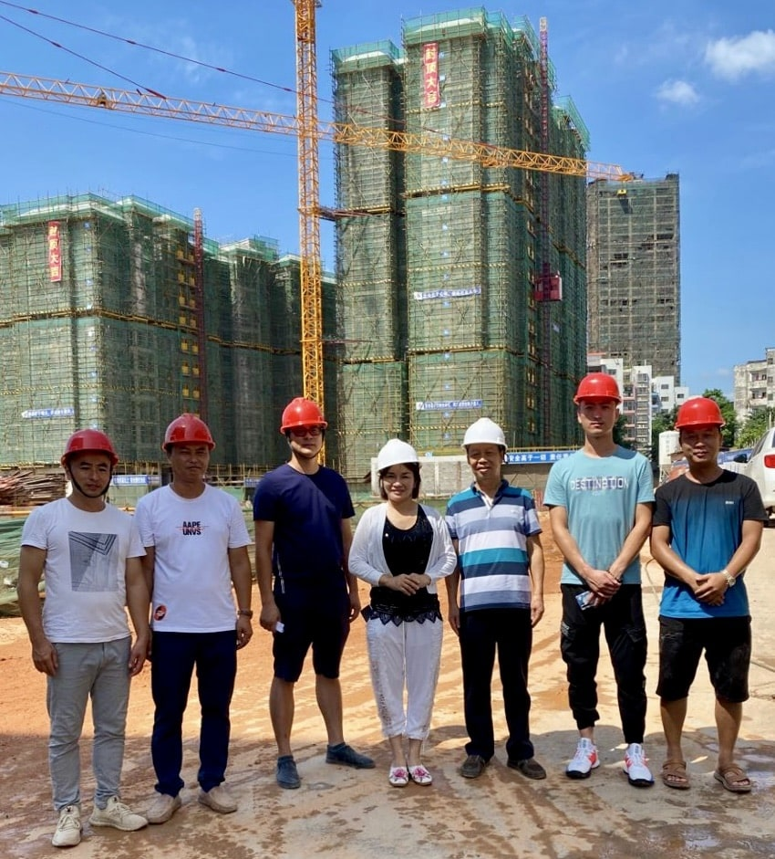

国田房地产
2003年，南宁市国田房地产开发有限责任公司正式成立，黄胭樱担任董事长兼法人代表，从地产经纪人成功转型为房地产开发商，实现了商业身份的华丽的转身。 在黄胭樱的带领下，国田集团迅速崛起。公司开发的“幸福花园”“聚丰苑”“秋月湖”等地产项目相继推出，赢得了广大消费者的好评。国田集团也由此在行业内初显规模，成为南宁本土知名的房地产开发商。
国田集团，深耕南宁，砥砺奋进21年。2003年，国田房地产正是在中国房地产蓬勃发展的阶段应运而生。如今，历经21年的磨练与成长，不仅开发了多个时尚宜居的商住小区，创办了”国田地产”这一品牌，还创办有自治区示范幼儿园称号的—秋月湖幼儿园，并把业务拓展到海外地产、酒店经营，新媒体，科技农业，应急救援培训等多个领域。
2003年，南宁市国田房地产开发有限责任公司正式成立，黄胭樱担任董事长兼法人代表，从地产经纪人成功转型为房地产开发商，实现了商业身份的华丽的转身。 在黄胭樱的带领下，国田集团迅速崛起。公司开发的“幸福花园”“聚丰苑”“秋月湖”等地产项目相继推出，赢得了广大消费者的好评。国田集团也由此在行业内初显规模，成为南宁本土知名的房地产开发商。

国田农业科技公司，自2013年成立以来，始终秉承“服务三农，振兴乡村”的核心理念，致力于成为现代农业发展的领航者，业务涵盖了从源头到终端的全产业链：蔬菜瓜果种植、水产养殖、农业机械销售、农产品销售、互联网销售以及食品进出口等多元化领域。公司创建“鲜桂坊”品牌，积极开拓农产品销售市场，通过互联网销售，打破地域限制，将优质的农产品推向全国乃至世界。

国之海文化传媒公司，成立于2021年，是一家从事歌舞娱乐活动,游艺娱乐活动,演出经纪等业务的公司，主营业务为：ip孵化、主播电商、拍摄剪辑培训、抖音号代运营、短视频拍摄、抖音推广、小红书推广，打造爆款抖音账号“覃锴中”。
广西国瑞救援技术公司，成立于2023年，主营业务为：应急救援培训、应急救援器材出售、夏令营等应急、研学板块。